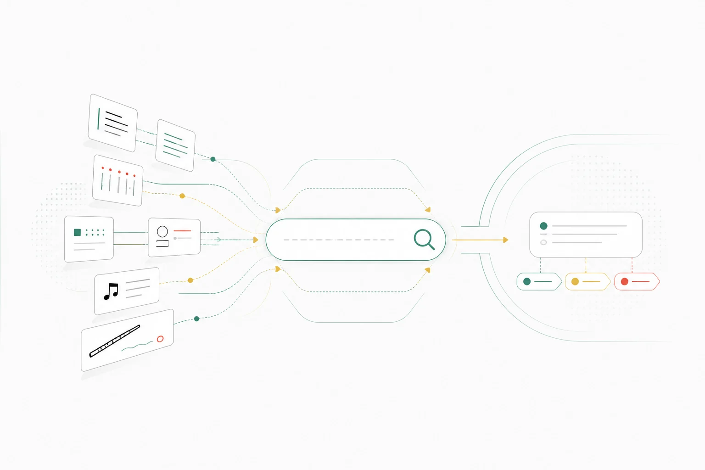

跳到主要內容
笛
中國笛子知識庫
DIZI KNOWLEDGE ARCHIVE
搜尋全站
學習
笛子百科
曲目
人物與傳承
研究文庫
影音與譜例
搜尋
目錄
學習
笛子百科
曲目
人物與傳承
研究文庫
影音與譜例
搜尋
跨類型檢索
搜尋知識庫
可用繁體、簡體、拼音、英文、人名、曲名或演奏技法搜尋。來源記錄與 L1 以上實體會清楚標示類型及成熟度。
關鍵詞
內容類型
全部類型
專題文章
樂器
教學單元
機構
人物
曲目
地域
研究來源
技法
知識子題
知識領域
語言
全部語言
英文
簡體中文
繁體中文
繁體中文（香港）
繁體中文（台灣）
搜尋
清除條件
搜尋結果
也可直接瀏覽：
笛子百科
研究文庫
學習中心
搜尋需要啟用 JavaScript
你仍可直接瀏覽知識庫入口：
笛子百科
、
研究文庫
、
人物與傳承
、
曲目庫
、
學習中心
主題插圖（非教學圖）

搜尋
AI 編輯示意，尚待專家覆核；不作指法、貼膜步驟或聲學測量依據。